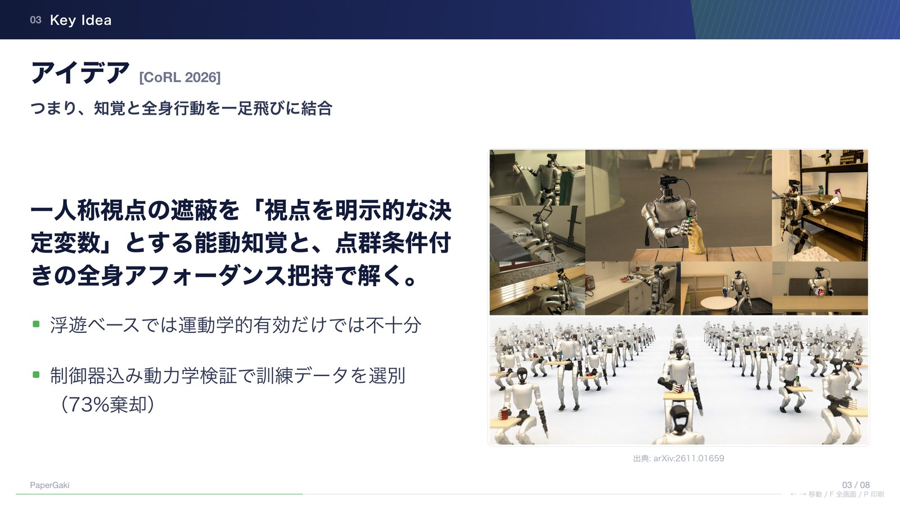
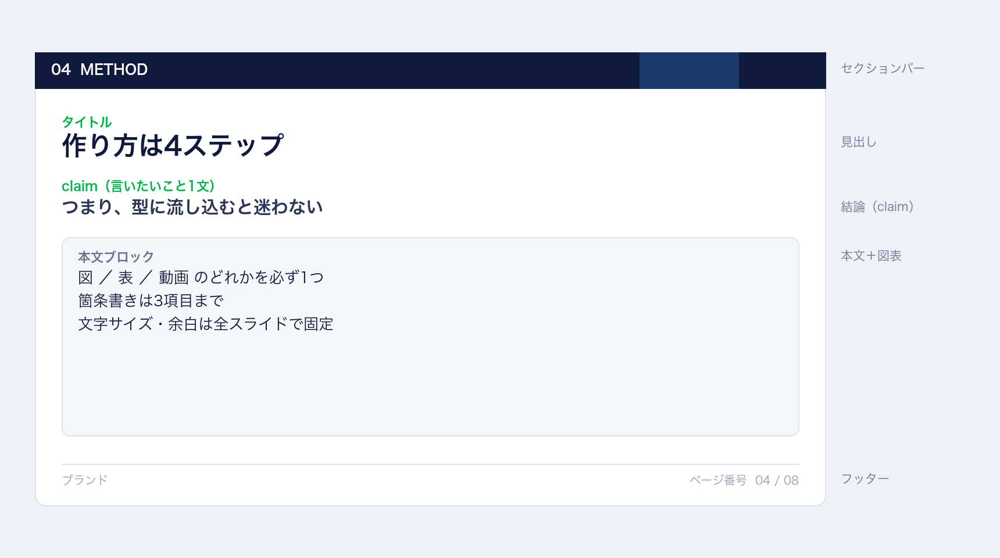

論文1本を8枚に圧縮するときに効いた、レイアウトと情報量の決めごと。
HTML 1枚で完結するスライドキットの設計メモ

つまり、詰め込むほど読まれなくなる
言いたいことは1つに絞る
スライドは「読む資料」ではなく「見る資料」。1枚で1つの主張だけを持つ。
型に流し込むと迷わない

詰め込みをやめたら、伝わるようになった
| 項目 | Before | After |
|---|---|---|
| 箇条書きの数 | 6〜8 | 3 |
| 図の数 | 0〜1（小さい） | 1（必ず） |
| 文字サイズ | バラバラ | 固定 |
向かない用途もある
まずは1本、通しで作ってみる
元になった考え方と実装。